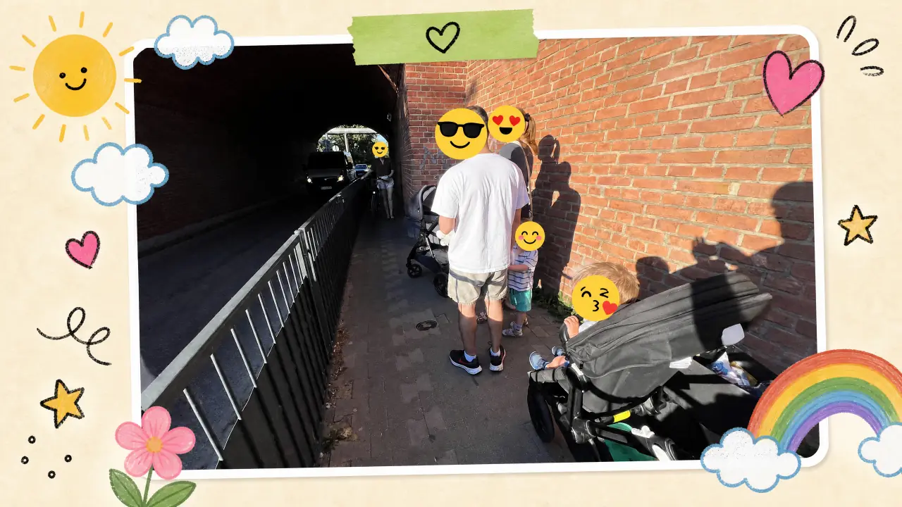

Przejście w planie miasta od 2024 r.
Miejscowy plan zagospodarowania przestrzennego (MPZP) „Jeżyce-Północ" — uchwały A1 i A2 — przewiduje przejście / tunel pod torami linii nr 351 w rejonie ul. św. Wawrzyńca i Poleskiej.
Bezpieczne przejście pieszo-rowerowe pod torami linii kolejowej nr 351 w Poznaniu, łączące Jeżyce z Sołaczem i Parkiem Sołackim. Miasto wpisało je do planu w 2024 r. — wciąż go nie ma.
Otwiera formularz Google · imię + e-mail · ok. 30 s · bez zobowiązań
Miejscowy plan zagospodarowania przestrzennego (MPZP) „Jeżyce-Północ" — uchwały A1 i A2 — przewiduje przejście / tunel pod torami linii nr 351 w rejonie ul. św. Wawrzyńca i Poleskiej.
PKP PLK przygotowuje projekt przejścia. Mimo planu i dokumentacji mieszkańcy wciąż nie mają jak bezpiecznie przejść na drugą stronę.
Nasyp linii nr 351 odcina Jeżyce od Sołacza i Parku Sołackiego. Najbliższe bezpieczne przejście jest daleko, na obwodzie.
Najbliższe przejście pod torami jest dziś przy ul. Kościelnej — pod historycznym wiaduktem. Ruch rowerowy jest tam zaplanowany dobrze (osobna sygnalizacja), ale chodnik dla pieszych jest bardzo wąski: tak ciasny, że wygodnie przejść można właściwie tylko w jedną stronę naraz.
Najtrudniej mają rodzice z wózkami, dzieci i osoby z niepełnosprawnościami. Dlatego potrzebne jest dodatkowe przejście dla pieszych — wygodne i bezpieczne, takie jak na wizualizacji u góry strony.

Chodzi o przejście pieszo-rowerowe pod torami kolejowymi w rejonie ul. św. Wawrzyńca i ul. Poleskiej w Poznaniu, łączące dzielnicę Jeżyce z Sołaczem i Parkiem Sołackim. Dziś nasyp linii kolejowej nr 351 dzieli obie dzielnice — piesi, rowerzyści, rodzice z wózkami i osoby z niepełnosprawnościami muszą nadkładać drogi do najbliższego bezpiecznego przejścia.
Przejście jest przewidziane w miejscowym planie zagospodarowania przestrzennego „Jeżyce-Północ", uchwalonym w 2024 r. W 2025 r. PKP PLK prowadzi dokumentację projektową. Inicjatywa obywatelska zabiega o to, by miasto i kolej dokończyły realizację — m.in. przez zgłoszenie projektu do Poznańskiego Budżetu Obywatelskiego (PBO).
Składamy projekt do Poznańskiego Budżetu Obywatelskiego i naciskamy na miasto oraz PKP PLK. Im więcej głosów poparcia, tym mocniejszy mandat społeczny i twardszy argument w rozmowie z urzędem.
Twój podpis na formularzu nie jest jeszcze formalnym podpisem PBO — to deklaracja poparcia i kontakt, dzięki któremu damy znać, gdy ruszy zbiórka podpisów i głosowanie.
Oto wybór z 311 odpowiedzi na pytanie „Dlaczego to dla Ciebie ważne?" w formularzu poparcia (163 osoby dodały komentarz). Wypowiedzi są autentyczne i anonimowe — podpisane tylko dzielnicą.
Dotychczasowe przejście pod wiaduktem na ul. Kościelnej jest bardzo ciasne i umożliwia ruch właściwie tylko w jedną stronę — jest za wąskie, by komfortowo się minąć.
Obecne przejście to wąskie gardło. Nie jest optymalne dla żadnej grupy — pieszych, rowerzystów, samochodów. Niestety musi obsłużyć wszystkich. Jak coś jest do wszystkiego, to jest do niczego.
Jedyne wąskie przejście na stronę Sołacza to jakiś żart. Dwa wózki się nie miną, ludzie się blokują, przeciskają i przepychają. Osiedla się rozrastają — pilnie potrzebne jest dodatkowe, szersze przejście.
Czy ktoś z urzędu miasta doświadczył przejścia wiaduktem na Kościelnej, po tym małym chodniczku, w ładne popołudnie? Tam jest tłok, rowery się pchają, z wózkiem trzeba się zatrzymać przed wejściem, bo inaczej nikt się nie zmieści.
Szybkie dotarcie z Goplany na Sołacz i dalej nad Rusałkę — bez przejścia przy ruchliwych ulicach (św. Wawrzyńca i Niestachowska) i bez nadkładania drogi dookoła pod wiaduktem na Kościelnej.
Tunel na Kościelnej w sezonie ciągle się korkuje przez wózki, hulajnogi i rowery. Nowe przejście usprawni dostanie się do Parku Sołackiego, zwłaszcza z dziećmi.
Mieszkam niedaleko i każde przejście do parku z dzieckiem wiąże się ze staniem w kolejce pod wiaduktem :(
Prawie codziennie chodzę na spacery do Parku Sołackiego. Przejście w tunelu jest bardzo wąskie — ciężko przejść z wózkiem czy dziećmi na rowerkach. W sezonie wiosenno-letnim tworzą się kolejki.
Mieszkam na osiedlu Wieża Jeżyce. Do parku i nad Rusałkę najbliżej mam przy ruchliwej Niestachowskiej — boję się tam o bezpieczeństwo dzieci i psów, a pod mostem przy Kościelnej jest zawsze ciasno.
Jednokierunkowy tunel na Kościelnej w weekend ma bardzo duży ruch. Rowery jeżdżą po chodniku, choć nie powinny — pieszy nie ma jak przejść, bo nie zmieści się razem z rowerzystą.
Żeby ze św. Wawrzyńca dostać się na Sołacz, trzeba minąć 2–3 przejścia z sygnalizacją świetlną — to wydłuża czas. W tunelu dwie osoby często nie mogą się swobodnie minąć.
W okolicy mieszka dużo rodzin z dziećmi i brakuje terenów zielonych. Nowe przejście sprawiłoby, że wyjście do parku nie byłoby taką dużą wyprawą dla dziecięcych nóżek.
Często przechodzę przejściem na Kościelnej — jest zdecydowanie niekomfortowe, za wąskie, a nawet niezbyt bezpieczne, bo mijając się można się otrzeć o cegły albo czyjś rower.
Jako mieszkanka Sołacza bardzo często bywam na Jeżycach — byłoby to ogromne ułatwienie.
Mieszkam w nowo wybudowanej Goplanie i chcę mieć szybki, bezpieczny dostęp na Sołacz — pieszo lub rowerem z dzieckiem.
Przejście pod wiaduktem przy Kościelnej jest bardzo wąskie, co utrudnia przejście osobom z wózkiem lub niepełnosprawnościami.
Będę mogła normalnie przejechać z wózkiem na Sołacz. Teraz jest to utrudnione — przejście jest bardzo wąskie, a dodatkowo jeżdżą tamtędy rowerzyści.
Większa dostępność terenów rekreacyjnych Sołacza dla osób z niepełnosprawnościami i starszych mieszkających w pobliżu wiaduktu.
Trasa przy Niestachowskiej do parku jest niebezpieczna i nieprzyjemna (duży ruch aut), a most na Kościelnej jest ciasny i niepraktyczny.
Jest zapisane w planach i — jako alternatywa do niebezpiecznego dla pieszych przejazdu z wąskimi chodnikami — jest niezbędne.
Mieszkam dokładnie w miejscu, gdzie powinno być przejście.
Stare przejście jest niewydolne — biorąc pod uwagę rozrost osiedla Goplana, nowe bardzo ułatwi komunikację.
Przy obecnej liczbie mieszkańców Jeżyc istniejące przejścia między Jeżycami a Sołaczem są niewystarczające, mało bezpieczne i nie zachęcają do częstego korzystania — przydałyby się dodatkowe punkty łączące oba rejony.
Zmodernizowali i wyremontowali całą okolicę, a obecny wiadukt to ciasna ruina, w której nie da się przejść — trzeba się przeciskać przez tłum ludzi z rowerami. Fajnie, gdyby dopasowano to do reszty wyremontowanej okolicy.
Moja narzeczona pracuje po drugiej stronie nasypu i musi codziennie sporo okrążać.
To absurd, żeby dzieci jeździły rowerkami z Jeżyc do Parku Sołackiego wzdłuż Niestachowskiej.
Aktualne przejście na Kościelnej jest okropne.
Moją pracę i mieszkanie dzielą właśnie te tory.
Przejście przy Kościelnej jest kompletnie nieprzepustowe i momentami wręcz niebezpieczne — minięcie się dziecięcych rowerów i pieszych jest po prostu trudne. Widziałam tam już niefortunne upadki.
Wiadukt kolejowy jest jedyną bramą z Jeżyc na Sołacz i jednocześnie wąskim gardłem, gdzie nawet pieszym nieraz trudno się minąć.
Zabiegam o to przejście od lat. Wnioskowaliśmy lata temu o jego wpisanie do miejscowego planu. Jestem zachwycony tą inicjatywą!
Zależy mi, żeby łączyć, a nie dzielić.
Mam dwójkę dzieci i psa, a pod tunel wiecznie pchają się rowerzyści. Z wózkiem muszę czekać, aż inni z drugiej strony go opuszczą. Rowerzyści, rolkarze, ludzie z psami, wózkami, na hulajnogach — na przejściu o szerokości metra to dramat.
Wózek bliźniaczy ledwo się mieści pod wiaduktem na Kościelnej. Przechodzę tylko dzięki uprzejmości pieszych z naprzeciwka, którzy dosłownie przytulają się do ściany. Niepoważne w Poznaniu w XXI wieku.
Moje dzieci często przechodzą pod wiaduktem do piekarni czy na lody. Chciałabym, żeby mogły tam przechodzić bezpiecznie.
Dodatkowe przejście przejmie ruch z nowych osiedli — Goplany, Wieży — i odciąży wiadukt na Kościelnej.
To planowane bezpieczne przejście pieszo-rowerowe pod torami linii kolejowej nr 351 w Poznaniu, w rejonie ul. św. Wawrzyńca i ul. Poleskiej, łączące Jeżyce z Sołaczem.
W Poznaniu, pod nasypem linii kolejowej nr 351, w rejonie ul. św. Wawrzyńca i ul. Poleskiej. Nasyp dziś odcina Jeżyce od Sołacza i Parku Sołackiego.
Tak. Przewiduje je miejscowy plan zagospodarowania przestrzennego „Jeżyce-Północ" (uchwały A1 i A2) z 2024 r. W 2025 r. PKP PLK przygotowuje dokumentację projektową. Mimo to przejście wciąż nie powstało.
Wypełnij formularz poparcia (imię i e-mail) — ok. 30 sekund. To deklaracja poparcia; nie jest jeszcze formalnym podpisem w Poznańskim Budżecie Obywatelskim. O starcie zbiórki podpisów i głosowania informujemy mailem.
Za infrastrukturę kolejową odpowiada PKP PLK, a za planowanie i Poznański Budżet Obywatelski — Miasto Poznań. Inicjatywa obywatelska naciska na obie strony, by dokończyły zaplanowane przejście.
Pobierz gotową grafikę i wrzuć na Instagram, Facebook lub Stories — z linkiem jezyce-solacz.pl. Im więcej osób zobaczy, tym trudniej odłożyć sprawę na później.
↓ Grafika 1:1 — hasło ↓ Grafika 1:1 — fakt ↓ Grafika 1:1 — poprzyj ↓ Story 9:16 — hasło ↓ Story 9:16 — poprzyj
Grafiki to wizualizacje poglądowe (AI). Udostępniając, możesz dodać dopisek „wizualizacja".
Każdy podpis przybliża przejście, na które Jeżyce i Sołacz czekają od lat.
{kind=link}
{kind=link}
{kind=link}
{kind=link}
{kind=link}